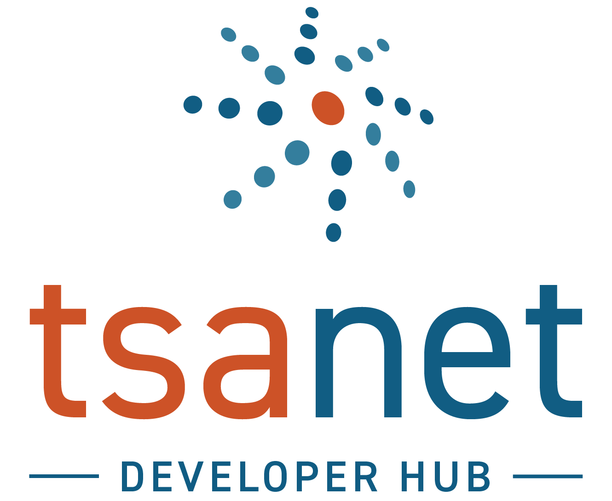

The engineering home for TSANet Connect: connectors, gateways, the REST API, and the design documents behind the platform. Built and maintained by TSANet, for the members who automate multi-vendor support.

One path through an outbound case. INFORMATION is optional, REJECTED is the other terminal state, and the response clock stops at the partner's first reply whichever it is — not at closure. The lifecycle rules →
Production integrations maintained in the tsanetgit organization. One connection reaches every partner member.
LWC on the Case record page, TSANet Cases as a related list, 15-minute scheduled sync, auto-approval flows by asset serial.
Architecture & setup → GA · Power PlatformManaged solution in your own environment: Dataverse tables, a plugin assembly, Power Automate flows, and field mapping driven by a configuration table.
Architecture & setup → Planned · 2026Not built yet. A platform assessment of the surfaces, Table API traps and distribution choices an eBonding integration has to design around.
Platform assessment → GA · appTwo layers in your own tenant: a ZAF sidebar app for agents, and a ZIS integration for inbound push and public-reply forwarding.
Architecture & setup → Early access · gatewayThe first gateway-class connector: TSANet hosts and operates the adapter, because Intercom runs no member code in-workspace. Canvas Kit panel in the Help Desk.
Architecture & platform notes → PatternThe translation microservice pattern: your platform's events in, Connect API calls out, and updatedAfter polling back. For any platform without a connector.
A Java client generated from the Connect API spec, wrapped in nine typed facades — plus a console app, attachment receiver and web demo. Python and TypeScript not started.
Library reference → Work in progress · v1.0.0One shared TSANet-facing engine, thin per-platform adapters: the machinery behind Fin / Intercom, and the contract a member or vendor builds their own adapter against.
Design & adapter guide →The behaviours that cost integrators time, gathered from building four connectors against it. The endpoint reference lives in GitBook and is generated from the spec — this is the layer underneath it.
By default most rejections return HTTP 500 — indistinguishable from an outage. One Accept header gets you documented status codes and RFC 7807 bodies.
OAuth 2.0 client credentials is the current server-to-server path; POST /v1/login is legacy. Watch the scope format — the obvious one fails.
Fetch the process form fresh every time, and parse its SELECT options on newlines rather than commas.
CasesSave the token immediately. There is no idempotency key on create, and responded — not the status name — is what gates the SLA.
Two note fields rendered as two sections, so never copy one into the other. Attachments need both sides configured.
Webhooksv1 and v2 both accept your subscription and deliver different type strings. Payloads are thin; delivery is a single attempt.
Interactive, web-native engineering documents. Published straight from the repo — every document is a page, not a PDF. The library is new; these are the first entries.
One case, two schemas: where the write and read models diverge, how custom fields come from the form template, and the two mappings that have no clean answer yet.
Direct push, no platform storage, and delivery to both parties — plus the two responsibilities the platform leaves entirely to your connector.
Why a hosted gateway rather than an installed app, the runtime as built, and the submit-outcome taxonomy that keeps ambiguity from becoming duplicate cases.
The ZAF sandbox constraints, ZIS integration naming, the three-audience note visibility model, and the API-token retirement clock.
A pre-implementation map with every claim tagged by evidence level — surfaces, Table API traps, and the distribution choice certification gates.
Cross-cutting write-ups that are not tied to one connector or one endpoint.
One question about your platform — will it run your code inside the member's tenant? — decides who operates the integration, where credentials live, whether connector faults are independent or correlated, and whether shipping a fix means asking every member to upgrade. The taxonomy behind all five platforms on this hub, with the decision procedure for a platform that isn't on it yet.
Every connector can accept inbound cases without an agent, and they disagree completely about when that is wise. Accepting stops the SLA clock — and tells a partner an engineer is engaged. Four shipping postures, from accept-everything to never-accept, and how to build a rule that asserts something actually true.
Evaluations, integration notes, and member experience with the new generation of AI-native support platforms — and how each connects to TSANet Connect for multi-vendor cases.
Fin / Intercom is written up. The rest are on the list, not yet assessed.
Migration stories, coexistence patterns, and what changes for collaboration workflows when a member moves platforms.
Planned topic areas. Nothing published here yet.
Discussion runs on GitHub Discussions — no separate accounts, no separate platform. The space is open; pick the category that fits.
Anything involving credentials or account changes still goes to membership@tsanet.org — a discussion thread is public, and credentials never should be.
The wish list is the one we most want answered. Which platform your team runs on is the single most useful thing you can tell us, and it is what decides which connector gets built next.
Browse the discussions Get in touch